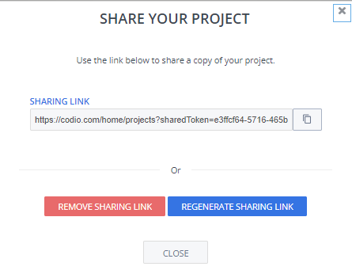
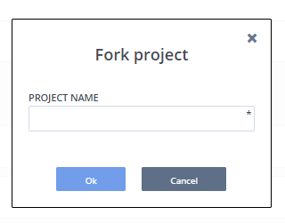

Share Project
You can share a copy of your project, follow these steps.
Click the Project tab on the menu bar and choose Share.
On the Share Your Project dialog, copy the Sharing Link and send it to someone you want to share your project with. You can also Remove and Regenerate the sharing link.
The person with the sharing link can enter that link into their browser to copy the project into their account
Enter Project Name and click Ok